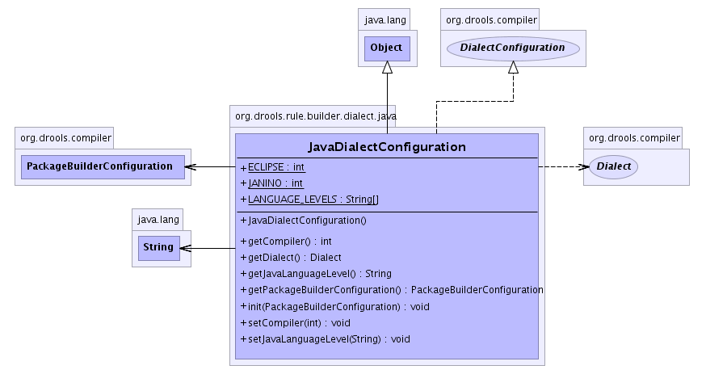

org.drools.rule.builder.dialect.java
Class JavaDialectConfiguration
java.lang.Object
 org.drools.rule.builder.dialect.java.JavaDialectConfiguration
org.drools.rule.builder.dialect.java.JavaDialectConfiguration
- All Implemented Interfaces:
- DialectConfiguration
public class JavaDialectConfiguration
- extends java.lang.Object
- implements DialectConfiguration
There are options to use various flavours of runtime compilers.
Apache JCI is used as the interface to all the runtime compilers.
You can also use the system property "drools.compiler" to set the desired compiler.
The valid values are "ECLIPSE" and "JANINO" only.
drools.dialect.java.compiler =
drools.dialect.java.lngLevel = <1.4|1.5|1.6>
The default compiler is Eclipse and the default lngLevel is 1.4.
The lngLevel will attempt to autodiscover your system using the
system property "java.version"
The JavaDialectConfiguration will attempt to validate that the specified compiler
is in the classpath, using ClassLoader.loasClass(String). If you intented to
just Janino sa the compiler you must either overload the compiler property before
instantiating this class or the PackageBuilder, or make sure Eclipse is in the
classpath, as Eclipse is the default.
-
- 
| Methods inherited from class java.lang.Object |
clone, equals, finalize, getClass, hashCode, notify, notifyAll, toString, wait, wait, wait |
ECLIPSE
public static final int ECLIPSE
- See Also:
- Constant Field Values
JANINO
public static final int JANINO
- See Also:
- Constant Field Values
LANGUAGE_LEVELS
public static final java.lang.String[] LANGUAGE_LEVELS
JavaDialectConfiguration
public JavaDialectConfiguration()
init
public void init(PackageBuilderConfiguration conf)
- Specified by:
init in interface DialectConfiguration
getPackageBuilderConfiguration
public PackageBuilderConfiguration getPackageBuilderConfiguration()
- Specified by:
getPackageBuilderConfiguration in interface DialectConfiguration
getDialect
public Dialect getDialect()
- Specified by:
getDialect in interface DialectConfiguration
getJavaLanguageLevel
public java.lang.String getJavaLanguageLevel()
setJavaLanguageLevel
public void setJavaLanguageLevel(java.lang.String languageLevel)
- You cannot set language level below 1.5, as we need static imports, 1.5 is now the default.
- Parameters:
level -
setCompiler
public void setCompiler(int compiler)
- Set the compiler to be used when building the rules semantic code blocks.
This overrides the default, and even what was set as a system property.
getCompiler
public int getCompiler()